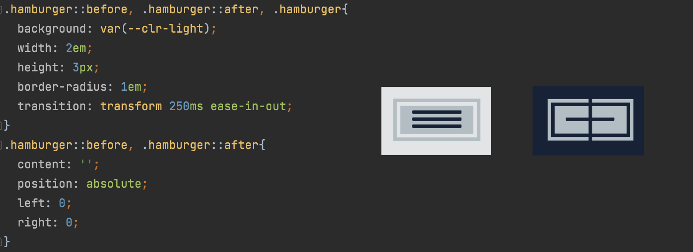

Built a website using HTML and CSS
This website was my second adventure into the world of web development. I think it is important to present work in intuitive ways, so I try to bring a full stack perspective to my projects despite frontend design not being one of my main interests. I used HTML 5 and CSS to build this website without a template on WebStorm. Although it is a work in progress, I think I implemented some cool CSS features. One of the big ones is the hamburger that you see on the top right of the page. It has a fun animation and sleek design. Here is some of the CSS for it:
Other cool features are in the project section where you can hover over the image and there is a text transition showing details about the project and the download button for my resume. Thank you to the many YouTube tutorials and websites including Kevin Powell's course that helped me learn how to build these different features! I will continue to update this website as I work on new projects and have new experiences.